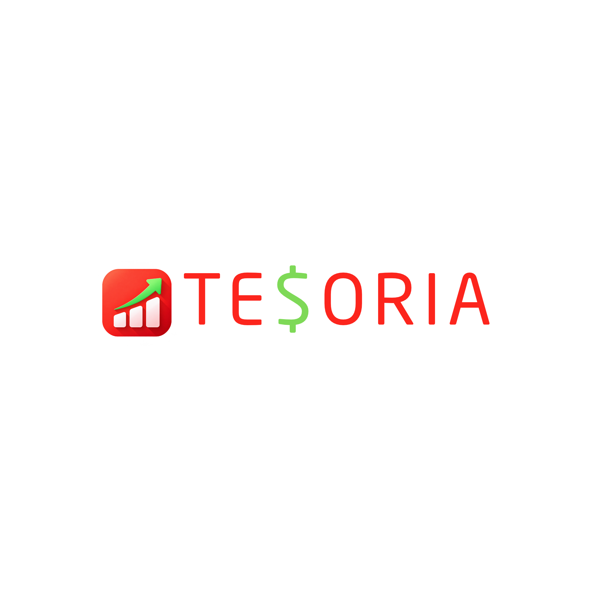

Transaction-based insights
Financial charts update as transactions change, keeping the dashboard aligned with recorded activity.
ENGINEERING CASE STUDY · PERSONAL PROJECT
A full-stack budgeting application centered on the 50/30/20 framework, bringing transaction tracking, financial reporting, account recovery, and security safeguards into one experience.

Managing everyday spending across needs, wants, and savings can be difficult without a clear picture of where transactions belong. Tesoria organizes budgeting around the 50/30/20 rule and provides immediate visual feedback as activity changes.
Financial charts update as transactions change, keeping the dashboard aligned with recorded activity.
Email verification with one-time codes and a password recovery flow help users manage account access.
A 12-month CSV export allows users to take their financial records outside the application.
Rate limiting, security headers, and hashed credentials are included in the application's security approach.
Frontend: React, providing the budgeting interface and interactive charts.
Backend: Express, supporting application functionality and account-related flows.
Data: PostgreSQL, used by the full-stack application.
This describes the technologies and product capabilities documented in the portfolio. Detailed schema diagrams, endpoint contracts, and measured performance results are intentionally omitted until verified against the repository.
Want to examine the exact architecture or implementation details? The repository is the source of truth. You can also explore the live budgeting experience.